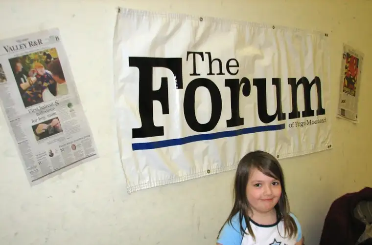
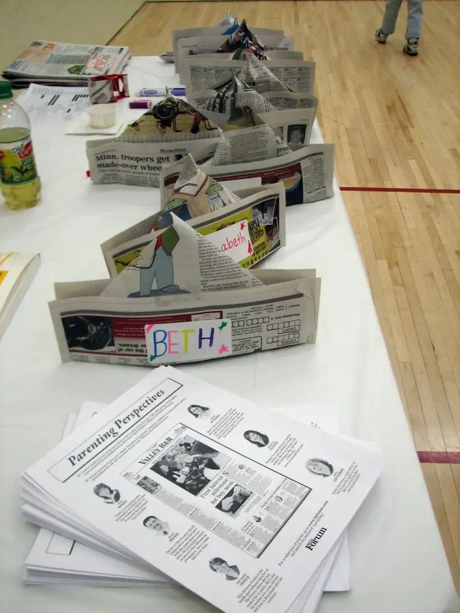
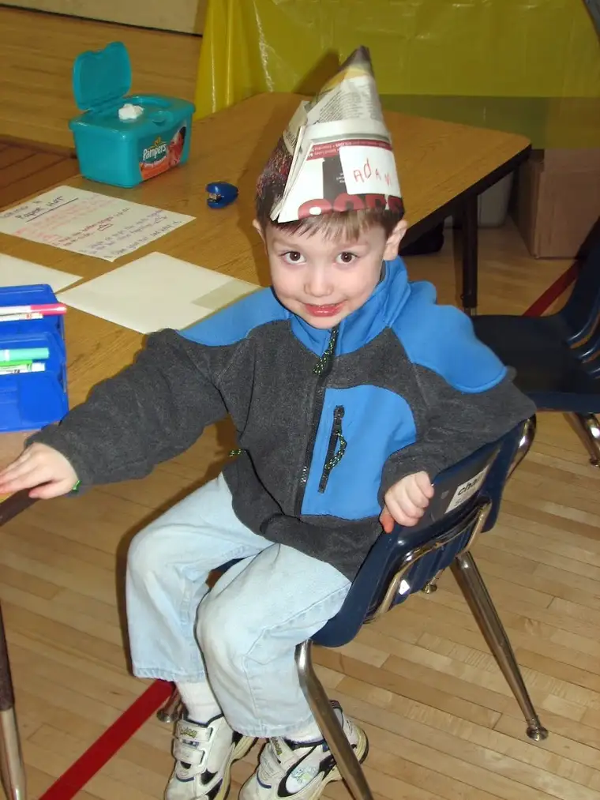
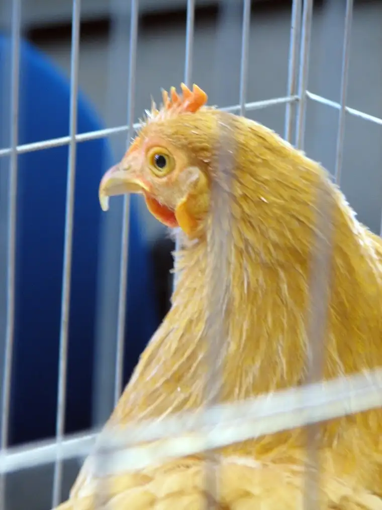
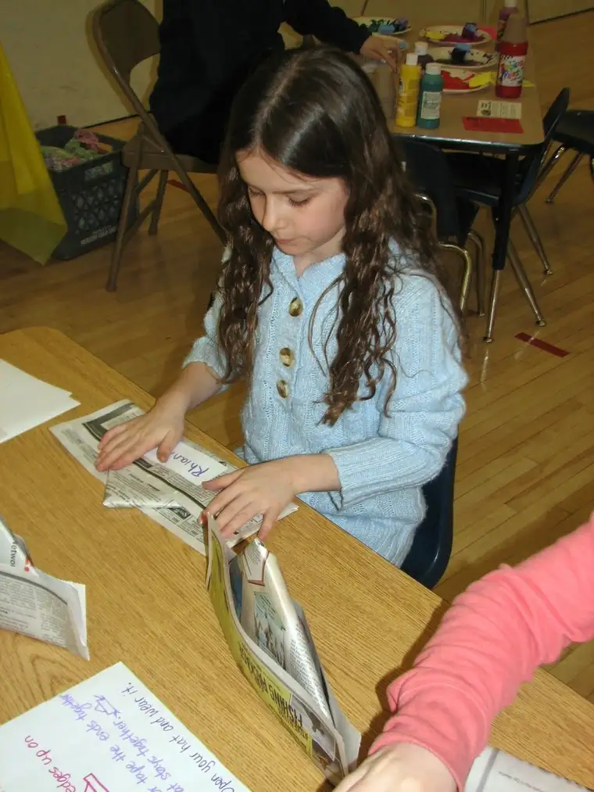
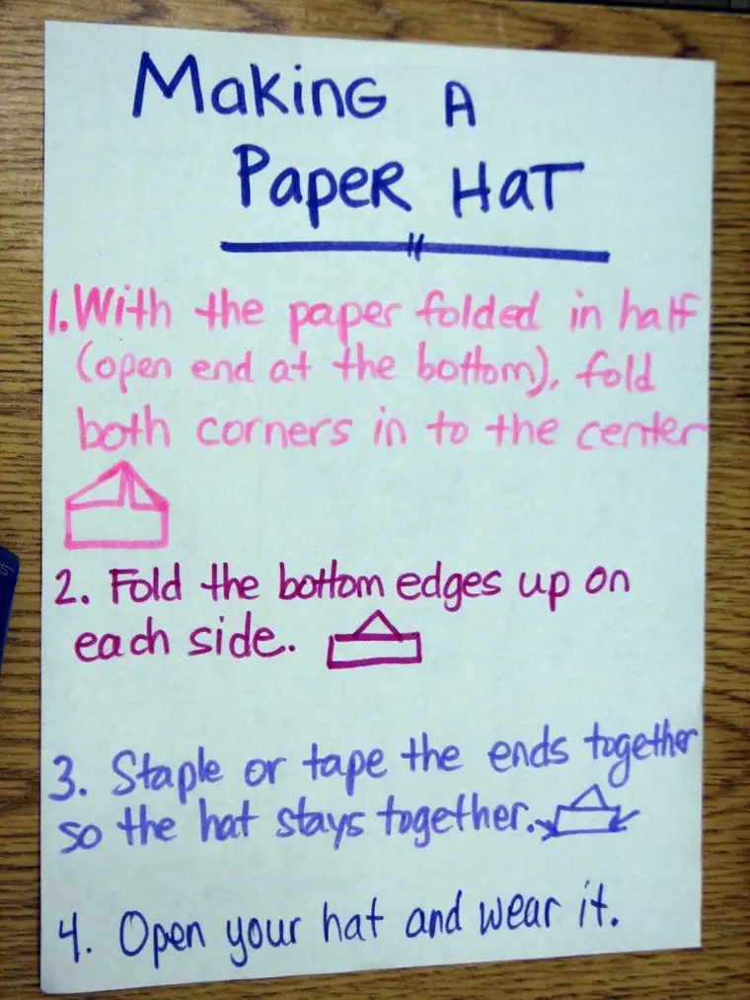

  
{kind=link}
{kind=link}
{kind=link}
Truth be told, I missed out on fully exploring the plethora of offerings. My main mission of the day was to help young fair participants fashion hats from newspapers as part of the booth representing The Forum . In part, it was a chance for us Tuesday parenting columnists to connect with other parents and help spread the word about the paper’s new “Parenting Perspectives” section, and to give the kids something else to bring home from the event.
Consider now that I am one of those parents who, when her small child approaches her with a clean sheet of paper and requests she make a paper airplane, must truthfully say, “Sorry, I don’t know how. You’ll have to ask your brother.” (Pretty lame, I know, but creating paper airplanes that actually fly is something I’ve yet to master, and you can’t teach an old dog…) After some laborious practice over lunch one day with Forum deputy editor Mary Jo Hotzler, I did in fact learn the fine art of creating newspaper hats, and I have to say, they look pretty cute on little ones (and the few parents who dared to wear them when their tykes turned down the chance). Not only that, but I have been reminded of yet another use for all those old newspapers.
And now you, too, can try out this twist on newspaper recycling. Younger kids might need help with creasing and keeping things even, but older kids should be fine on their own. As for parents, if I could figure it out, trust me, so can you.
How to make a paper hat
1. With the paper folded in half (open end at the bottom), fold top corners into the center so they meet in the middle, then crease.   
2. Fold bottom edges up about three inches and crease on each side (this will be the brim of the hat).
3. Staple or tape together ends so hat stays together.
4. Open your hat and wear it!
{kind=link}
{kind=link}
{kind=link}